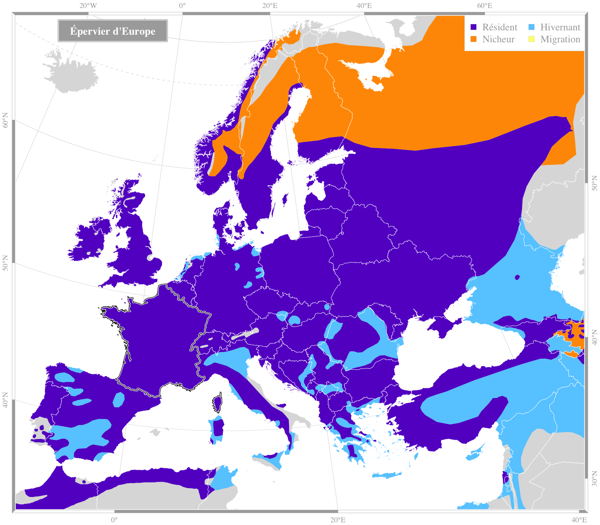

Crédit : biodivlibrary |
Epervier d'EuropeAccipiter nisus (Linnaeus, 1758)Ordre : Accipitriformes - Famille : Accipitridae
Envergure : 60-80 cm Longueur : 28-38 cm Alimentation : petits oiseaux Habitat : forêts, campagnes boisées, villes |
|||||
Répartition en France
Espèce migratrice : non |

Source des données : Bird Life International |